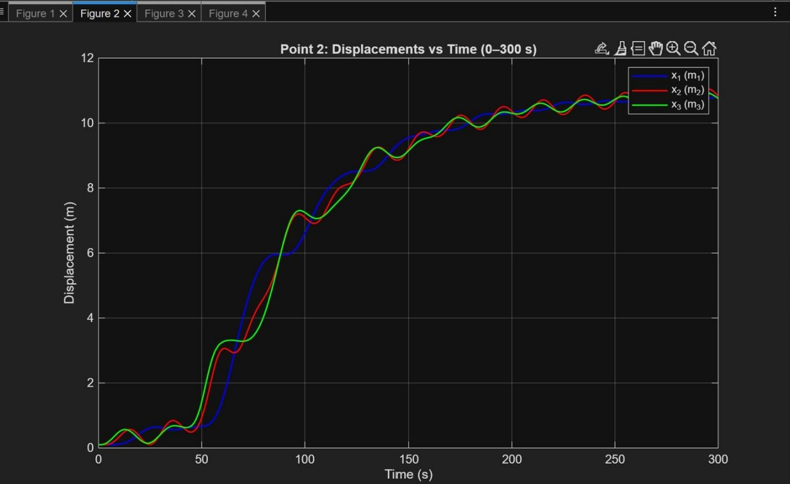
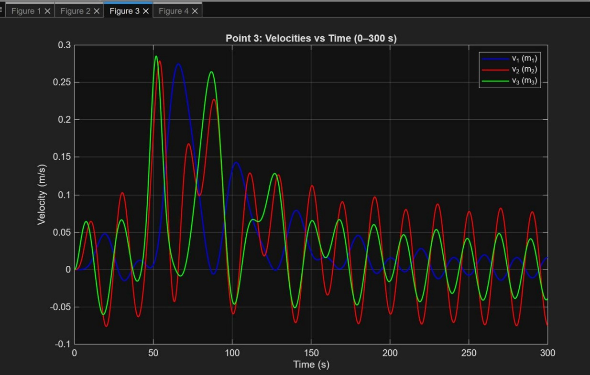
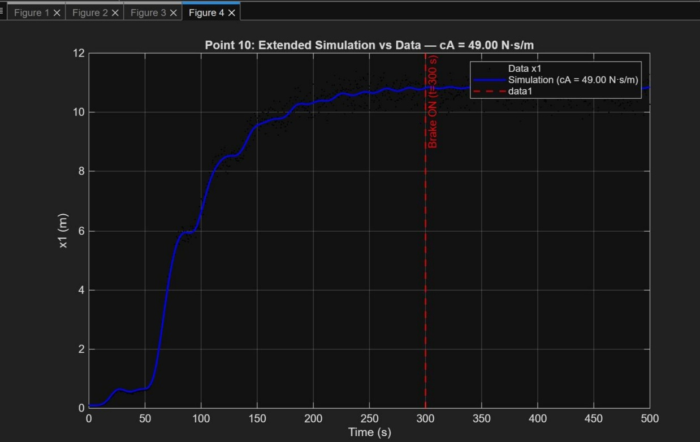

Project Overview
This project involved developing a MATLAB simulation of a three-mass dynamic system using numerical integration. Noisy displacement and velocity measurements were provided, and I used the simulation to estimate unknown physical parameters and analyze the system's behavior.
The project combined programming, applied mathematics, numerical methods, data analysis, and physical modeling.
Parameter Estimation

I tested candidate values for an unknown component mass and simulated the resulting displacement trajectory. Each simulation was compared with the provided measurement data using mean squared error.
Best estimated mass
121 kg
Numerical Simulation
After estimating the unknown mass, I implemented Forward Euler integration to simulate the displacement and velocity of all three masses across the system.


System Analysis
The simulation was also used to evaluate several engineering and numerical quantities.
- Determined the minimum component separation required to prevent contact
- Identified the global maximum velocity magnitude reached by the system
- Calculated the minimum instantaneous gap between adjacent components
- Calculated the mean velocity of the first mass during the initial 10 seconds
Damping Parameter Fitting

I extended the model beyond 300 seconds and introduced an additional damping force acting on the first mass.
I performed a parameter sweep across candidate damping coefficients. For each candidate, the simulated response was compared with the measured data using mean squared error.
Best-fit damping coefficient
49 N·s/m
Key Technical Work
- Implemented Forward Euler numerical integration in MATLAB
- Processed noisy displacement and velocity measurement data
- Used mean squared error to evaluate model accuracy
- Implemented iterative parameter-search techniques
- Analyzed system constraints and time-series behavior
- Created visualizations comparing measured and simulated results
What I Learned
This project strengthened my understanding of how mathematical models can be converted into computational simulations. It also gave me experience working with imperfect measurement data and using quantitative error metrics to estimate parameters.
The project was especially valuable because it combined concepts from mathematics, programming, data analysis, and engineering — the intersection I am continuing to explore through Applied Mathematics & Statistics and Computer Science.
Project Resources
A sanitized version of the full technical report is available for additional methodology, calculations, results, and figures.
View Full Technical Report